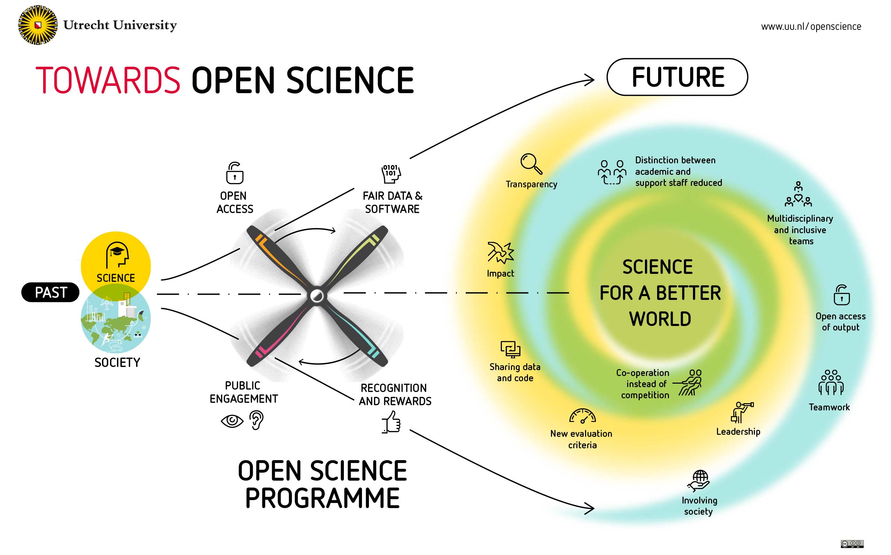
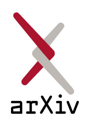

Automated assessment of scientific papers
scienceverse.github.io/talks/2024-EAISI-papercheck/
 @debruine
@debruine
Abstract
Researchers are increasingly aware of the need to share all aspects of the research cycle, from pre-registered analysis plans and study materials to the data and analysis code that produce the reported results. However, much of this digital information is in a format that makes it difficult to find, access, and reuse. Additionally, best practices are evolving at a pace that is difficult for researchers to keep up with. In this talk, I will discuss the potential for automated checks of scientific papers to address these problems, and introduce {papercheck}, an application that combines simple regular expression text searching, R code, machine learning, and generative AI to assess scientific papers. This tool can be used to suggest improvements pre-publication, or to more efficiently conduct meta-scientific research on large numbers of papers.
The Problem
Best Practices are Rapidly Evolving



Un-FAIR Meta-Data

- All research outputs should be FAIR
- PDFs are where data goes to die
- Meta-data use cases:
- facilitating meta-analyses
- improving the re-use of reliable measures
- meta-scientific research
Solutions
Checklists?


Automated Checks
- Time-efficient
- Requires less expertise
- Reproducible
- Generates machine-readable metadata
Automation Strategies
Grobid: A machine learning software for extracting structured information from scholarly documents
And then…


R Package
Paper Import
---------------
to_err_is_human
---------------
* Sections: 4
* Sentences: 24
* References: 2
* Citations: 2Batch Import
--------
eyecolor
--------
* Sections: 8
* Sentences: 93
* References: 21
* Citations: 22------
incest
------
* Sections: 7
* Sentences: 56
* References: 4
* Citations: 14------
prereg
------
* Sections: 10
* Sentences: 180
* References: 23
* Citations: 31Text Search
| text | section | header | div | p | s | id |
|---|---|---|---|---|---|---|
| On average researchers in the experimental (app) condition made fewer mistakes (M = 9.12) than researchers in the control (checklist) condition (M = 10.9), t(97.7) = 2.9, p = 0.005. | results | Results | 3 | 1 | 2 | to_err_is_human.xml |
| On average researchers in the experimental condition found the app marginally significantly more useful (M = 5.06) than researchers in the control condition found the checklist (M = 4.5), t(97.2) = -1.96, p = 0.152. | results | Results | 3 | 2 | 1 | to_err_is_human.xml |
ChatGPT
| id | answer | cost |
|---|---|---|
| eyecolor.xml | There were 150 women and 150 men, making a total of 300 subjects in this study. | 0.000598 |
| incest.xml | There were a total of 1998 participants in this study. | 0.000551 |
Modules
* ai-summarise: Generate a 1-sentence summary for each section
* all-p-values: List all p-values in the text, returning the matched text (e.g., 'p = 0.04') and document location in a table.
* all-urls: List all the URLs in the main text
* imprecise-p: List any p-values reported with insufficient precision (e.g., p < .05 or p = n.s.)
* marginal: List all sentences that describe an effect as 'marginally significant'.
* osf-check: List all OSF links and whether they are open, closed, or do not exist.
* ref-consistency: Check if all references are cited and all citations are referenced
* retractionwatch: Flag any cited papers in the RetractionWatch database
* sample-size-ml: [DEMO] Classify each sentence for whether it contains sample-size information, returning only sentences with probable sample-size info.
* statcheck: Check consistency of p-values and test statisticsModules: StatCheck
This module uses the {statcheck} package to check the consistency of p-values and test statistics.
Modules: Imprecise P-Values
This module scans the text for all p-values and flags those reported inexactly, such as p < .01, p < .10, or p = n.s.
Modules: Marginal Significance
This module searches the text for phrases such as “marginally significant” or “borderline significance” and flags these as inappropriate descriptions.
Marginal Significance
You described effects as marginally/borderline/close to significant. It is better to write ‘did not reach the threshold alpha for significance’.
| text | section | header | div | p | s |
|---|---|---|---|---|---|
| The paper shows examples of (1) open and closed OSF links; (2) citation of retracted papers; (3) missing/mismatched citations and references; (4) imprecise reporting of p-values; and (5) use of “marginally significant” to describe non-significant findings. | abstract | Abstract | 0 | 1 | 3 |
| On average researchers in the experimental condition found the app marginally significantly more useful (M = 5.06) than researchers in the control condition found the checklist (M = 4.5), t(97.2) = -1.96, p = 0.152. | results | Results | 3 | 2 | 1 |
Modules: Inaccessible Resources
This module scans text for references to OSF projects and checks their status, flagging users if any of the links are either broken or lead to inaccessible private projects.
Modules: Reference Consistency
This modules checks for missing references or citations.
Reference Consistency
This module relies on Grobid correctly parsing the references. There may be some false positives. There are references that are not cited or citations that are not referenced
| bib_id | doi | ref | missing |
|---|---|---|---|
| b1 | 10.0000/0123456789 | NA | citation |
| (Smithy, 2020) | NA | From a human factors perspective, human error is a symptom of a poor design (Smithy, 2020). | reference |
Modules: Retracted Papers
This module searches the RetractionWatch database for all cited references in a paper and flags those that have been retracted.
Shiny App
Modules
Reports
ChatGPT
Promoting Adoption

Center for Open Science
Workflows

